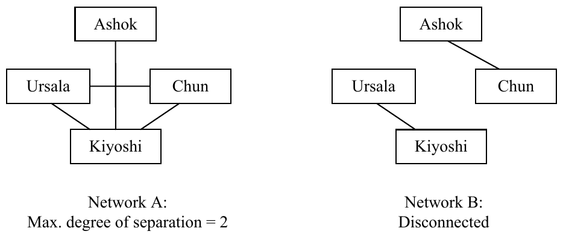

The 30th Annual ACM International Collegiate Programming Contest World Finals · Problem I
In our increasingly interconnected world, it has been speculated that everyone on Earth is related to everyone else by no more than six degrees of separation. In this problem, you must write a program to find the maximum degree of separation for a network of people.
For any two people, the degree of separation is the minimum number of relationships that must be traversed to connect the two people. For a network, the maximum degree of separation is the largest degree of separation between any two people in the network. If there is a pair of people in the network who are not connected by a chain of relationships, the network is disconnected.
As shown below, a network can be described as a set of symmetric relationships each of which connects two people. A line represents a relationship between two people. Network A illustrates a network with 2 as the maximum degree of separation. Network B is disconnected.

The input consists of data sets that describe networks of people. For each data set, the first line has two integers: P (2 ≤ P ≤ 50), the number of people in the network, and R (R ≥ 1), the number of network relationships. Following that first line are R relationships. Each relationship consists of two strings that are names of people in the network who are related. Names are unique and contain no blank spaces. Because a person may be related to more than one other person, a name may appear multiple times in a data set.
The final test case is followed by a line containing two zeroes.
For each network, display the network number followed by the maximum degree of separation. If the network is disconnected, display DISCONNECTED. Display a blank line after the output for each network. Use the format illustrated in the sample output.
4 4 Ashok Kiyoshi Ursala Chun Ursala Kiyoshi Kiyoshi Chun 4 2 Ashok Chun Ursala Kiyoshi 6 5 Bubba Cooter Ashok Kiyoshi Ursala Chun Ursala Kiyoshi Kiyoshi Chun 0 0
Network 1: 2 Network 2: DISCONNECTED Network 3: DISCONNECTED